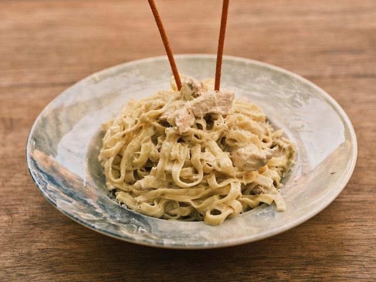
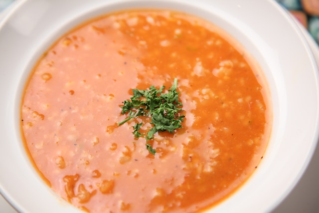
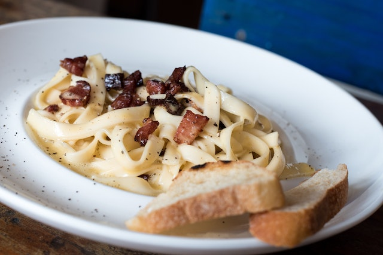

Veggie Alfredo
Creamy, indulgent alfredo sauce gets a nutrient-packed twist when tossed with a medley of fresh vegetables. Start with a base of tender pasta like fettuccine or penne. The sauce is made by simmering garlic, broth, and milk, then whisking in grated parmesan until it reaches a luscious consistency. Toss in an array of vibrant veggies like broccolini, sun-dried tomatoes, sautéed mushrooms, and crisp bell peppers. The vegetables add pops of color, texture, and earthy flavors that perfectly complement the rich, creamy sauce. A sprinkle of chopped parsley or basil provides a fresh herbal note. This vegetable-loaded alfredo is a decadent yet balanced way to enjoy a classic comfort food while sneaking in those all-important servings of produce.
Veggie Lentil Soup
A steaming bowl of hearty vegetable lentil soup is comfort in a spoon. The foundation starts with a thick, savory broth made by simmering lentils with aromatic vegetables like onions, carrots, and celery. As the lentils cook down, they release their warm, earthy flavors into the stock. A rainbow of diced vegetables like potatoes, tomatoes, spinach, and zucchini are added to make this soup incredibly nutritious and filling. The potatoes help thicken the broth as they break down, while the other veggies retain just enough texture to make each bite interesting. Finished with a sprinkle of fresh herbs like thyme or parsley, this lentil soup has layers of delicious savory tastes. It's the perfect one-pot meal - a protein and fiber-packed, low-fat option to satisfy and nourish on a cold day.
Veggie Carbonara
Creamy, indulgent carbonara gets a fresh, meat-free makeover with this vegetable-loaded twist on the Italian classic. Instead of the traditional pancetta or bacon, this vegetarian version relies on a umami-packed combination of sautéed mushrooms, sun-dried tomatoes, and spinach to provide tons of savory flavor. Tossed with al dente spaghetti or bucatini, the veggies mingle with a luscious sauce made by tossing hot pasta water with egg yolks, grated parmesan, garlic, and a touch of cream. The residual heat from the pasta gently cooks the eggs, creating a rich, glossy coating on each strand of pasta. Finished with a sprinkling of fresh parsley, red pepper flakes, and extra parmesan, this carbonara achieves the signature silky texture without any meat. It's a decadently satisfying main packed with nutrients from all the vegetables.
Veggie Tacos

These veggie tacos are an explosion of freshness and flavor in every bite. Start with warm corn tortillas as the base. They're piled high with a hearty filling of seasoned black beans or refried beans, then topped with a vibrant rainbow of crisp shredded cabbage, juicy diced tomatoes, creamy avocado slices, and a sprinkle of crumbled queso fresco or feta. For an extra kick, add some thinly sliced radishes, diced jalapeños, or a dollop of salsa verde. A generous squeeze of fresh lime juice ties all the flavors together with a bright zing. You can also include sautéed bell peppers, onions, or roasted corn to bulk up the veggie filling. Every taco is customizable with your favorite south-of-the-border toppings. These handheld veggie powerhouses are messy in the best way and packed with plant-based protein, fiber, and so much fresh flavor in every satisfying bite.